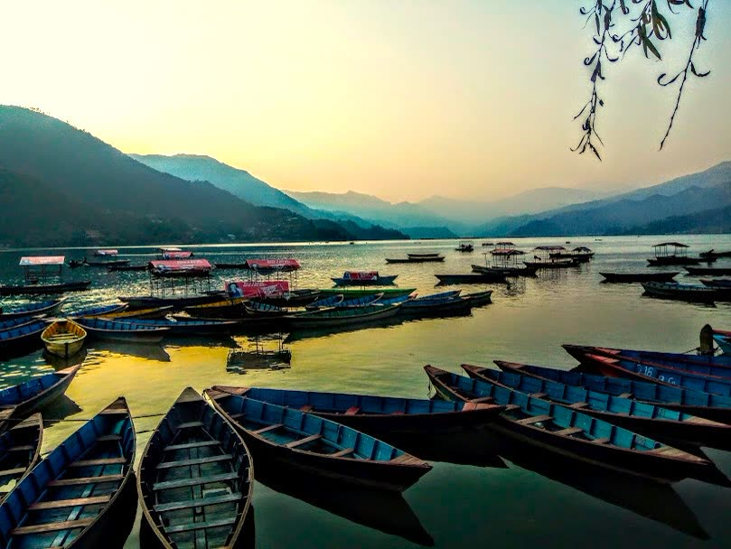
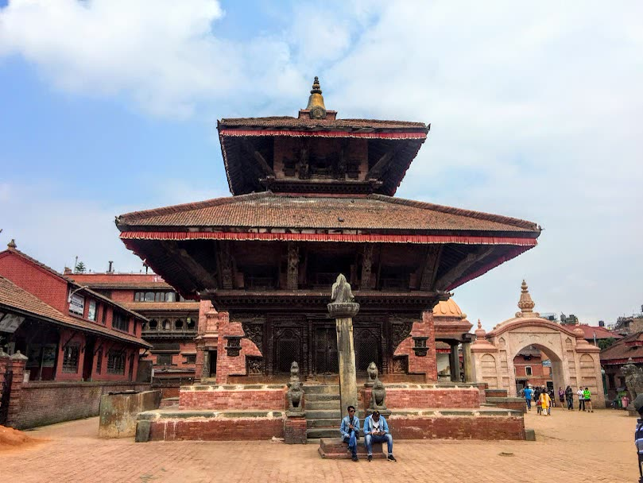
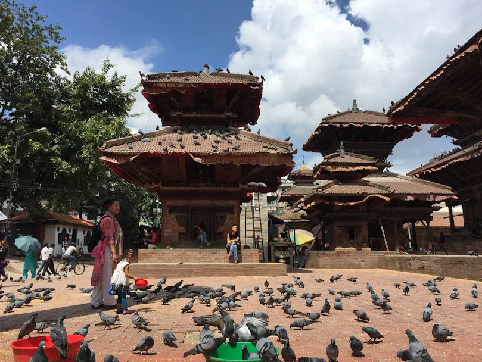
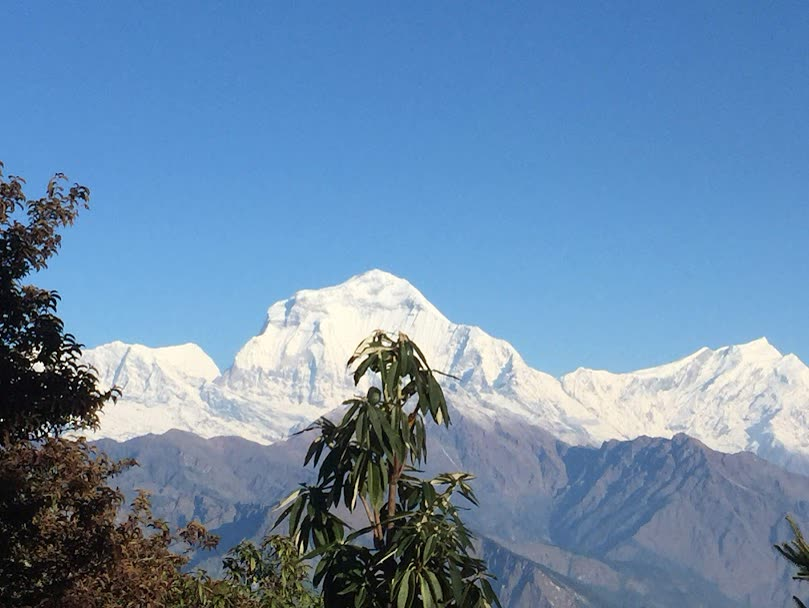
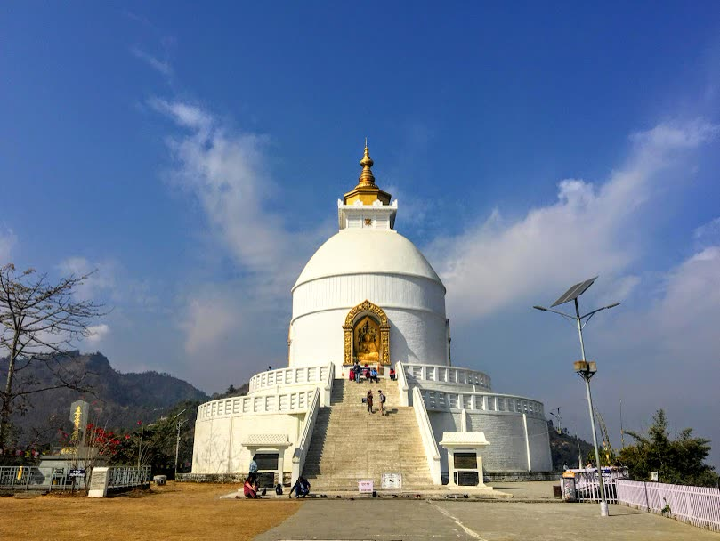

Nepal Cultural Tour with Poon Hill Trek
The Nepal Cultural Tour with Poon Hill Trek is a perfect combination of heritage exploration and Himalayan adventure. This journey begins with a cultural tour in Kathmandu Valley, where travelers explore UNESCO World Heritage Sites, ancient temples, monasteries, and historical cities.





Key Trip Facts
Trek Overview
Trip Highlights
The Nepal Cultural Tour with Poon Hill Trek is a perfect combination of heritage exploration and Himalayan adventure. This journey begins with a cultural tour in Kathmandu Valley, where travelers explore UNESCO World Heritage Sites, ancient temples, monasteries, and historical cities. After experiencing Nepal’s rich traditions and culture, the trip continues toward the beautiful Annapurna Himalaya region. The trekking route passes through charming villages, terraced fields, rhododendron forests, and traditional Gurung and Magar settlements. During this 9–12 day adventure, trekkers enjoy the famous Poon Hill Trek, breathtaking sunrise views, authentic village life, and stunning panoramas of the Annapurna and Dhaulagiri mountain ranges.
Nepal Culture Tour with Poon Hill Trek
The Nepal Cultural Tour with Poon Hill Trek is a perfect combination of ancient heritage, traditional village life, and spectacular mountain trekking experiences. This unique package offers travelers an opportunity to enjoy a complete Tour in Nepal, blending cultural exploration with the famous Ghorepani Poon Hill Trek in the beautiful Annapurna Himalaya region. It is designed for travelers who wish to discover Nepal’s rich traditions, UNESCO World Heritage sites, and scenic trekking trails on one unforgettable journey.
The journey begins with a fascinating World Heritage Tour in Nepal, exploring the cultural treasures of Kathmandu Valley. You can visit historic temples, ancient palaces, sacred monasteries, and traditional architecture in Kathmandu, Bhaktapur, and Patan. Nepal is home to remarkable UNESCO World Heritage Sites that showcase centuries of history, spirituality, and artistic excellence. This cultural experience gives visitors a deep understanding of Nepalese traditions, religion, and local lifestyles.
After the cultural exploration, the adventure continues toward the foothills of the majestic Annapurna Himalaya. The Poon Hill Trek is one of the most popular choices for travelers seeking an easy and rewarding Annapurna Short Trek. The route passes through beautiful rhododendron forests, terraced farmlands, rivers, and charming Gurung and Magar settlements. It is considered one of the finest options for Trekking in Nepal because it combines natural beauty, mountain scenery, and cultural interaction.
The trek offers a wonderful Village Tour in Nepal, where travelers can experience authentic local life in mountain communities. Traditional villages such as Ghandruk and Ulleri allow visitors to witness local customs, traditional stone houses, agriculture, and warm Nepalese hospitality. These villages provide a meaningful cultural experience beyond the mountain landscapes.
The highlight of the journey is reaching Poon Hill (3,210m), a world-famous viewpoint in the Annapurna region. An early morning hike to Poon Hill rewards trekkers with breathtaking sunrise views over snow-capped peaks, including Annapurna South, Machhapuchhre (Fishtail), Dhaulagiri, Hiunchuli, and other spectacular mountains. The panoramic Himalayan scenery makes it one of the best destinations for Hiking in Nepal and photography lovers.
This trip is ideal for travelers seeking a shorter trekking experience without high-altitude challenges. The Annapurna Short Trek can be completed within a limited timeframe while still providing an unforgettable Himalayan adventure. Whether you are a family traveler, beginner trekker, photographer, or cultural enthusiast, this journey perfectly combines nature and heritage.
Among many options for Cultural Tours in Nepal, Nepal Cultural Tour with Poon Hill Trek stands out because it offers both cultural discovery and mountain adventure in one itinerary. Travelers experience ancient cities, sacred heritage sites, village life, and one of the most scenic trekking routes in Nepal.
If you are searching for the perfect Tour in Nepal that combines a World Heritage Tour in Nepal, a Village Tour in Nepal, a Poon Hill Trek, and authentic Trekking in Nepal, this journey creates lifelong memories in the heart of the Himalayas.
Best Time to Explore Nepal Cultural Tour with Poon Hill Trek
The best time to explore the Nepal Cultural Tour with Poon Hill Trek is during Spring (March to May) and Autumn (September to November). These seasons provide pleasant weather, clear mountain views, and excellent conditions for both cultural sightseeing and trekking in the Annapurna Himalaya region.
Spring (March–May) is one of the most beautiful times for Trekking in Nepal. The trails become colorful with blooming rhododendron forests, green hills, and comfortable temperatures. The weather is generally stable, making it ideal for hiking in Nepal and enjoying panoramic sunrise views from Poon Hill.
The Autumn (September–November) is considered the peak trekking season in Nepal. After the monsoon season, the skies become crystal clear, offering spectacular views of Annapurna, Dhaulagiri, and Machhapuchhre mountains. This period is also perfect for Cultural Tours in Nepal, as major Nepalese festivals like Dashain and Tihar provide opportunities to experience local traditions and celebrations.
The Winter (December–February) is suitable for travelers seeking quieter trails and peaceful village experiences, though mornings can be cold at higher elevations. Monsoon (June–August) brings lush landscapes, but frequent rain can affect trekking trails and mountain visibility.
For the best combination of World Heritage Tour in Nepal, Village Tour in Nepal, and the famous Poon Hill Trek, spring and autumn provide the most rewarding experience.
Difficulty Level
The Nepal Cultural Tour with Poon Hill Trek is considered an easy-to-moderate trekking experience in the Annapurna Himalaya region. It is suitable for beginners, families, and travelers with average fitness levels. The trails are well-marked and do not require technical climbing skills. Daily walking hours range from 4 to 6 hours through villages, forests, and stone steps. Although some uphill sections are challenging, proper pacing makes the trek manageable. This Trekking in Nepal journey offers a perfect balance of cultural exploration and Himalayan adventure, making it one of the most accessible and rewarding Annapurna Short Trek options.
Trek Duration
The total duration of the Nepal Cultural Tour with Poon Hill Trek is approximately 9 to 12 days, depending on the itinerary and travel style. This includes cultural sightseeing in Kathmandu Valley and trekking days in the Annapurna region. The trekking portion usually takes 4 to 5 days, starting from Ulleri and ending at Ghandruk or Pokhara. Daily trekking hours range from 4 to 6 hours. The itinerary is flexible, allowing rest, cultural visits, and photography opportunities. This short yet rewarding Tour in Nepal is ideal for travelers seeking a quick Himalayan trekking and cultural experience.
Maximum Altitude
The highest point of the Nepal Cultural Tour with Poon Hill Trek is Poon Hill, which stands at 3,210 meters above sea level. This famous viewpoint in the Annapurna Himalaya region offers breathtaking sunrise views over Annapurna, Dhaulagiri, Machhapuchhre, and surrounding peaks. The altitude is considered moderate, making it safe for most travelers without serious altitude sickness risks. Gradual ascent during the trek helps proper acclimatization. Poon Hill is one of the best viewpoints in Trekking in Nepal, providing unforgettable Himalayan panoramas and making this journey a highlight of any Annapurna Short Trek experience.
Accommodation
Accommodation during the Nepal Cultural Tour with Poon Hill Trek includes comfortable hotels in Kathmandu and Pokhara, along with teahouse lodges during trekking. In cities, travelers stay in standard to tourist-class hotels with modern facilities such as private rooms, Wi-Fi, and hot showers. During the trekking route, basic but cozy teahouses provide twin-sharing rooms, local meals, and a warm atmosphere. These lodges are run by local families, offering authentic village hospitality. This combination of comfort and local experience enhances both Cultural Tours in Nepal and Trekking in Nepal, ensuring a memorable journey in the Himalayas.
Food
Food during the Nepal Cultural Tour with Poon Hill Trek includes a mix of traditional Nepali meals and basic international dishes. In cities like Kathmandu and Pokhara, travelers can enjoy a variety of cuisines. During trekking, teahouses typically serve Dal Bhat (rice, lentils, vegetables), noodles, pasta, soups, eggs, and pancakes. Meals are fresh, hygienic, and locally prepared. Dal Bhat is the most popular and energy-rich food for trekkers in the Annapurna Himalaya region. The food experience adds cultural value to the journey while ensuring proper nutrition for Hiking in Nepal and trekking activities.
Transportation
Transportation for the Nepal Cultural Tour with Poon Hill Trek includes a combination of private vehicles, tourist buses, and local transport. Airport transfers and Kathmandu sightseeing are done by private car or van. Travel between Kathmandu and Pokhara is usually by tourist bus or private vehicle, taking around 6–8 hours by road or a short domestic flight option. From Pokhara, a short drive leads to Nayapul, the starting point of the trek. After completing the trek, transportation returns travelers to Pokhara and Kathmandu. This smooth travel arrangement makes the overall Tour in Nepal comfortable and well-organized.
Nepal Cultural Tour with Poon Hill Trek Itinerary: Day by Day
11 Days program for Nepal Cultural Tour with Poon Hill Trek. Daily timings and sequences remain flexible according to weather, flight operations, and group pace.
Day 1: Arrival in Kathmandu 1400 m
Approx. 1,400 m / 4,593 ft
Welcome to Kathmandu, the cultural heart of Nepal. Upon your arrival at Tribhuvan International Airport, our representative will warmly welcome you and transfer you to your hotel. After check-in, you can relax or explore the vibrant streets of Thamel. Overnight: Kathmandu
Day 2: Kathmandu Valley UNESCO Heritage Sightseeing including Bhaktapur and Patan, 1400 m
Approx. 1,400 m / 4,593 ft
After breakfast in Kathmandu, begin a full-day cultural sightseeing tour of the Kathmandu Valley, visiting some of Nepal’s most famous UNESCO World Heritage Sites. Start with a drive to Bhaktapur Durbar Square, located approximately 15 km east of Kathmandu, which takes around 45 minutes to 1 hour, depending on traffic. Bhaktapur is known for its well-preserved medieval architecture, ancient temples, traditional pottery, wood carvings, and rich Newari culture. Explore Nyatapola Temple, the Golden Gate, and the beautiful palace courtyards. After sightseeing in Bhaktapur, drive around 12 km for about 40 minutes to Patan Durbar Square. Patan, also called Lalitpur, is famous for its artistic heritage, ancient temples, royal courtyards, stone sculptures, and traditional metal craftsmanship. Visit Krishna Mandir, Patan Museum, and the historic palace complex while experiencing the vibrant local atmosphere. Continue with a short 7 km drive of approximately 25–30 minutes to Boudhanath Stupa, one of the largest Buddhist stupas in the world and an important pilgrimage site for Tibetan Buddhists. The peaceful atmosphere, colorful prayer flags, spinning prayer wheels, and surrounding monasteries create a spiritual experience. Enjoy lunch at one of the rooftop restaurants overlooking the stupa. In the late afternoon, drive around 8 km for about 30 minutes to Swayambhunath, popularly known as the Monkey Temple, situated at an altitude of approximately 1,400 meters (4,593 ft). This ancient hilltop stupa offers panoramic views of Kathmandu Valley along with beautiful Buddhist shrines, prayer wheels, and Hindu temples. The site is famous for its spiritual significance and playful monkeys living around the complex. After completing the sightseeing tour, drive back to the hotel in Kathmandu, which takes around 20 minutes depending on traffic conditions.
Day 3: Drive from Kathmandu to Pokhara Altitude: 822m / 2,697ft Distance: Approx. 210km Driving Duration: 7–8 Hours
Approx. 810 m / 2,657 ft
After breakfast, begin a scenic drive from Kathmandu to Pokhara along the Trishuli and Marsyangdi rivers. The journey offers beautiful mountain views, terraced fields, waterfalls, and traditional villages. Pokhara is Nepal’s famous lake city, surrounded by the stunning Annapurna Himalayan range. Overnight: Pokhara
Day 4: Drive to Ulleri Altitude: 2,050m / 6,725ft Driving Distance: Approx. 52km Driving Duration: 4–5 Hours
Approx. 2,050 m / 6,726 ft
After breakfast, drive through Nayapul and Tikhedhunga toward the beautiful Magar village of Ulleri. The road passes through hills, rivers, forests, and charming local settlements. Ulleri offers stunning mountain scenery and traditional village experiences. Overnight: Ulleri
Day 5: Trek from Ulleri to Ghorepani Altitude: 2,874m / 9,429ft Trekking Distance: Approx. 8km Trekking Duration: 4–5 Hours
Approx. 2,874 m / 9,429 ft
Today’s trek begins through beautiful rhododendron and oak forests. Gradually ascend toward Ghorepani, one of the most famous villages on the Poon Hill Trek route. During spring, the forest becomes colorful with blooming rhododendrons, Nepal’s national flower. Enjoy panoramic views of Annapurna South, Hiunchuli, Machhapuchhre, and Dhaulagiri ranges. Overnight: Ghorepani
Day 6: Poon Hill Sunrise Trek –Trek to Ulleri 3 hrs, Drive to Ghandruk Village 2012 m, 45 km
Approx. 2,012 m / 6,601 ft
Early in the morning, hike to Poon Hill, one of Nepal’s best sunrise viewpoints. Witness breathtaking panoramic views of the Annapurna and Dhaulagiri Himalayan ranges glowing in golden sunrise light. Poon Hill is one of the most famous viewpoints in the Annapurna region, offering breathtaking panoramic views of Annapurna South, Dhaulagiri, Machhapuchhre (Fishtail), and Hiunchuli peaks. After enjoying the spectacular sunrise view from Poon Hill at an altitude of 3,210 meters (10,531 ft), the journey continues for 3 hours to Ulleri Village. After having lunch, the drive to Ghandruk covers approximately 18–22 km and takes around 2 to 3 hours, depending on road conditions. Ghandruk village sits at an elevation of 1,940 meters (6,364 ft) and is one of the largest and most beautiful Gurung villages in Nepal. Upon arrival, travelers can explore the traditional stone-paved alleys, ancient monasteries, local museums, and charming houses with stunning mountain backdrops. The village provides incredible close-up views of Annapurna South and Machhapuchhre, making it a perfect cultural and scenic destination. Walking around Ghandruk in the evening offers a peaceful experience filled with local hospitality, traditional lifestyle, and unforgettable Himalayan landscapes, creating a memorable highlight of the Poon Hill Trek itinerary.
Day 7: Ghandruk → Dhampus Village (Driving distance): approx. 50 km (route via Nayapul / Kande / Phedi depending on road condition), 1650 m
Approx. 1,650 m / 5,413 ft
After breakfast in Ghandruk, enjoy a scenic drive to Dhampus, a beautiful traditional Gurung village located at an altitude of approximately 1,650 meters (5,413 ft). The drive passes through lush green hills, terraced farmland, charming rural settlements, and stunning Himalayan landscapes. Upon arrival in Dhampus during the early afternoon, check in to the guesthouse and relax while enjoying the peaceful mountain atmosphere. After lunch, take a leisurely walk around the village to experience the authentic lifestyle of the local Gurung community. Explore traditional stone houses, colorful prayer flags, local schools, and small monasteries while interacting with friendly villagers. Dhampus is famous for its breathtaking panoramic mountain views of Annapurna South, Machhapuchhre (Fishtail), Lamjung Himal, and Hiunchuli. The peaceful surroundings, rich culture, and spectacular sunset scenery make Dhampus one of the best short trekking and cultural destinations near Pokhara in the Annapurna region of Nepal.
Day 8: Drive from Dhampus to Hotel, and Pokhara Valley Sightseeing 6/7 hrs,810 m
Approx. 810 m / 2,657 ft
After breakfast, you will drive from Dhampus to Pokhara, which takes approximately 1.5 to 2 hours depending on road conditions. Upon arrival in Pokhara, check in at your hotel and take some time to relax before starting the sightseeing tour around the beautiful lake city. Your sightseeing tour includes a visit to the peaceful World Peace Pagoda, located on a hilltop overlooking Phewa Lake and the Annapurna mountain range. From here, you can enjoy panoramic views of Pokhara Valley, Phewa Lake, and the snow-capped Himalayas, including Machhapuchhre (Fishtail). Next, visit the sacred Gupteshwor Mahadev Cave, one of the most famous caves in Nepal dedicated to Lord Shiva. The cave is known for its naturally formed Shiva lingam and impressive limestone formations. Nearby, explore the beautiful Devi's Fall, a unique underground waterfall locally known as Patale Chhango. During the monsoon season, the waterfall becomes especially powerful and spectacular. Continue your tour with a visit to the International Mountain Museum, where you can learn about the history of mountaineering, the culture and lifestyle of Himalayan communities, and Nepal’s famous mountain expeditions. The museum offers fascinating exhibits related to the Himalayas and legendary climbers. In the evening, enjoy boating on the beautiful Phewa Lake while admiring the stunning reflections of Machhapuchhre Himal on the calm water. The peaceful atmosphere, colorful lakeside surroundings, and breathtaking mountain scenery make this one of the most memorable experiences in Pokhara. Return to your hotel for an overnight stay.
Day 9: Pokhara to Bandipur by 4 hrs drive, 80 km, 1030 m
Approx. 1,030 m / 3,379 ft
After breakfast in Pokhara, begin a scenic drive to Bandipur, one of Nepal’s most charming hilltop heritage towns. The drive covers approximately 80 km and takes around 3 to 4 hours, depending on road and traffic conditions. The journey follows the beautiful Prithvi Highway alongside rivers, green hills, terraced farmland, and traditional villages before ascending uphill to Bandipur. Located at an altitude of about 1,030 meters (3,379 ft), Bandipur is famous for its preserved Newari culture, traditional architecture, peaceful atmosphere, and stunning Himalayan panoramas. Upon arrival, check in to the hotel and enjoy lunch with breathtaking mountain scenery. In the afternoon, explore the beautifully preserved stone-paved streets, ancient temples, traditional Newari houses, local cafes, and cultural sites around the village. Bandipur offers magnificent views of the Annapurna, Dhaulagiri, Manaslu, and Langtang Himalayan ranges on clear days. Travelers can also visit viewpoints, local monasteries, Siddha Cave, or simply enjoy the peaceful hilltop environment. The relaxed atmosphere, rich cultural heritage, and panoramic mountain views make Bandipur one of the best cultural and scenic destinations between Pokhara and Kathmandu
Day 10: Bandipur to Kathmandu 150 km, 5 hrs
Approx. 1,400 m / 4,593 ft
After breakfast in Bandipur, drive back to Kathmandu through the scenic Prithvi Highway. The drive distance is approximately 145 km and usually takes around 5 hours, depending on traffic and road conditions. The journey passes along beautiful river valleys, terraced hillsides, rural villages, and green mountain landscapes, offering a memorable countryside experience of Nepal. The drive from Bandipur to Kathmandu beautifully combines scenic Himalayan foothills, traditional villages, and vibrant local culture, providing a wonderful conclusion to the Nepal holiday experience.
Day 11: Final Departure Altitude: 1,400m / 4,593ft Driving Duration: 30 Minutes to Airport
Approx. 1,400 m / 4,593 ft
Your wonderful Nepal cultural and trekking adventure comes to an end today. Depending on your flight schedule, our team will transfer you to Tribhuvan International Airport for your departure flight home with unforgettable Himalayan memories.
What is Included (Regular Package)
What is Excluded
Booking Dates & Availability
Packing List for Nepal Cultural Tour with Poon Hill Trek
Don't have it? Rent sleeping bags, down jackets, or poles in Kathmandu or arrange with us.Hiking Gear (5 items)
Layering & Clothing (5 items)
Sleep, Toiletries & Documents (3 items)
Read before you book: Nepal Cultural Tour with Poon Hill Trek
Practical logistics derived directly from this package's route facts, inclusions, and elevation profile.
Accommodation & Meals (Hotel, Lodge)
Accommodation follows the package grade (Hotel, Lodge) in Kathmandu and along the Annapurna route. Check your package Includes section for included meals and Kathmandu hotel nights.
Permits & Local Logistics
Transportation is arranged via Private Car, Van and Bus. Applicable permits listed in the package inclusions are arranged by Nepal Unique Treks prior to departure.
Route Difficulty & Elevation (3,210 m)
Nepal Cultural Tour with Poon Hill Trek is rated Easy with a maximum elevation of 3,210 m. Follow your guide's pacing and stay hydrated throughout the 11 Days itinerary.
Best Time to Visit (Spring (March, April, May), and Autumn ( October November, December))
Recommended operating season on the source page: Spring (March, April, May), and Autumn ( October November, December).
Altitude Profile of Nepal Cultural Tour with Poon Hill Trek
Weather on Nepal Cultural Tour with Poon Hill Trek
Nepal Cultural Tour with Poon Hill Trek Route & Area Overview
Book This Trek
Contact our Kathmandu coordinators using the booking panel for private or fixed-group departures.
Trip Feedback
Explore verified traveller stories or leave feedback on Nepal Unique Treks.
Visit Nepal Unique Treks